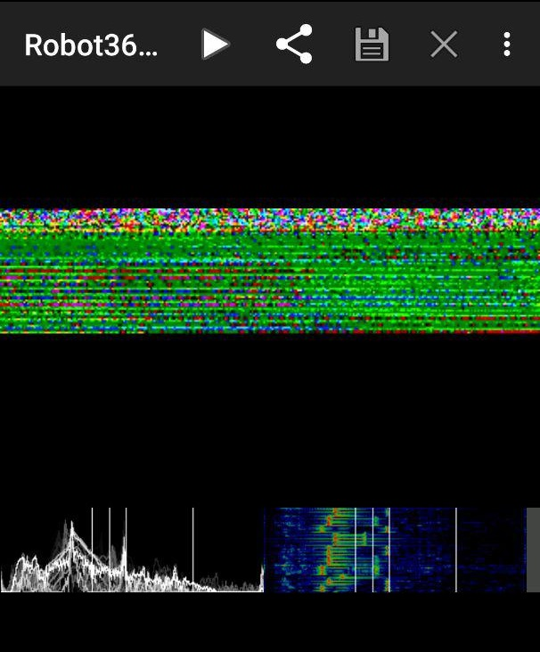
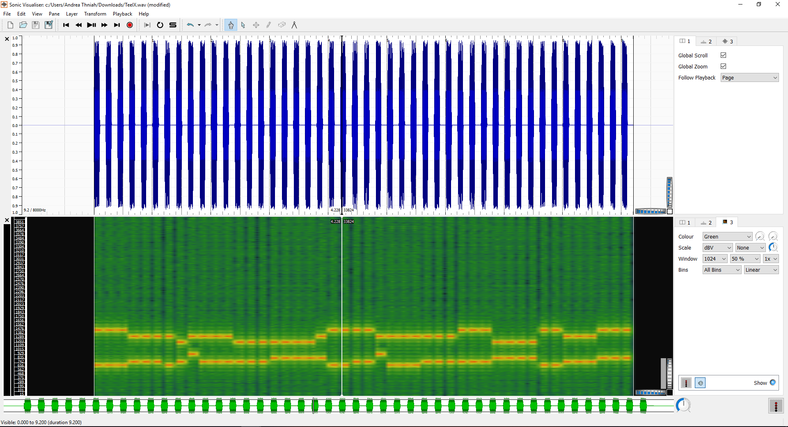
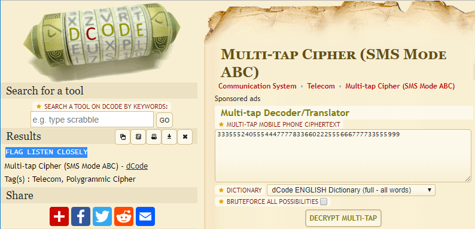
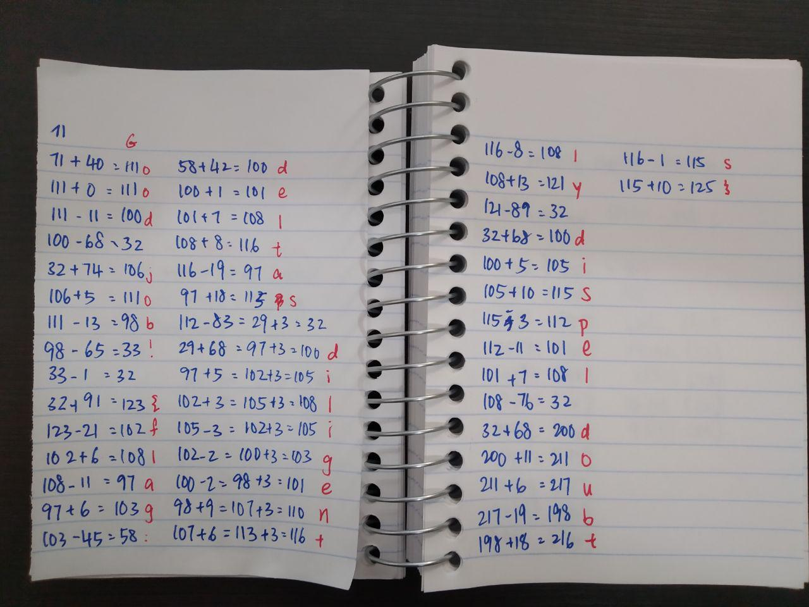
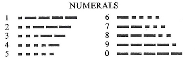
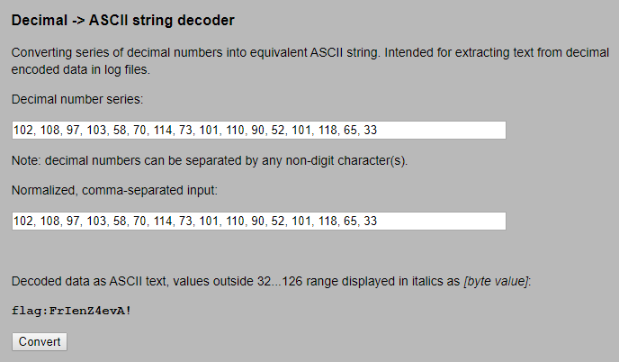

on
Day of Shecurity 2019
It has been a couple of months since I’ve step afoot into the land of raccoons Canada and I thought that is high time for me to immerse myself into the security community here at downtown Toronto.
Day of Shecurity is one of the very first event that I participated in and had tons of fun working on the CTF with folks I’ve met there.
Here’s some of the challenges writeup.
Flag Queen 2019
Event name: Day of Shecurity Toronto 2019
Location: George Brown College
Date: 14/09/2019 - 18/09/2019
Team: BoT

[Flag Queen] Veni, vidi, vici
Upon registration, all participants receive a card that looks like this.

The line at the bottom looks weird but :// and .klm/ was a dead giveaway that it was a URL link. ROT13 cipher easily reveal uggcf://qnlbsfurphevgl.klm to be https://dayofshecurity.xyz
Flag: https://dayofshecurity.xyz
[Web] Oh, yes. Little Bobby Tables we call him
The backend devs of this Super Secure Site (TM) thought they’d protected their users’ personal data. But, they’ve missed some things.
First you find the data, then you get the points, then you get the power.
https://chmodxx.net/dos
With the challenge named Little Bobby, there was little to no doubt that this challenge requires some form of SQL injection. With that in mind, I did a quick survey on the website in general. It only consist of a normal login page with some form of validation being enforced. Poking around, I noticed that any attempt to submit data from the frontend would have their data sanitized with the serialize() command.

Nevertheless, I tried the usual SQL injection statement to see if the login form is vulnerable. Lo and behold, it is. Now that I know that the site vulnerable from the frontend attack vector, I proceed to check the backend too.

Copying the request I made from the Network panel as a curl request, I tried submitting '1 or 1=1-- as the injection statement. Nope, that didn’t work out – I got the same fatal error as above. When I changed the injection statement to ' or 1=1-- though, I got something different, which unfortunately, is not the flag. Whyyyyy?


The answer lies in how the curl request was constructed. The curl I used contains a Cookie value specific to the browser session hence even if the injection were successful, I wouldn’t have been able to see anything within the terminal. I actually needed to go back to my browser that hasn’t been closed and refresh the page to see the flag!
curl "https://chmodxx.net/dos/submit.php"
[TRUNCATED]
-H "Cookie: PHPSESSID=5uj69calgmr27fk839lo33hc80" -H "Connection: keep-alive" -H "DNT: 1" --data "email=%27%20or%201%3D1--&password=sadfsdf" --compressed

Flag: {FLAG:AND1HOPEUVELEARNED2SANITIZEYOURINPUT5}
[Hunting] Easter Egg Hunt
I wonder what else is going on on this vserver…
You’ll learn some useful skills for this challenge at “Reversing and Exploring The World of Mobile Apps: Android APKs”
Googling vserver reveals that this is just a term for virtual private server like Digital Ocean, Heroku etc. With the challenge description in mind, I went ahead to do a reverse lookup on the URL given via Shodan.io.
Right off the bat, I saw something interesting - the IP address 142.93.151.96 actually has its hostname set as y2mk.cc. Several ports are also opened: 22, 80, 443, 8443. This result coincides with what I would see if I were to run nmap using nmap -sc -sV -oA y2mk 142.93.151.96
Visiting y2mk.cc tells me that I am on the correct path:
You’re halfway there!
Yep, you’ve found something else on this vserver but you’re not quite there yet.
Here comes the confusing part - curl commands.
curl -i 142.93.151.96:443 returns a 400 Bad Request because The plain HTTP request was sent to HTTPS port. This was weird, given that nmap clearly tells says that I should be seeing what y2mk.cc displays - after all, the value of http-title is Halfway there.

What is going on here? The key lies in how web-servers serves their content. In the current internet where multiple domains can exist in one IP address, there is a need for servers like nginx to be able to serve different contents to different domain names. How this is carried out is done via the host attribute in the request header.
One thing to note is that in this server, IP address and domain names are considered to be different thing - despite resolving into the same thing - and hence will serve different content. This makes sense considering the previous curl error message says the server would port forward any request to https. Inputting https://y2mk.cc:8443 as the curl parameter would have revealed the flag.


Flag: Please don’t portscan other people’s servers.
[Forensics] Not Quite A Stego-sauras
A simple ls -la showed that the image file contains 36382 bytes and that’s huge. Unfortunately, file flag.png doesn’t reveal anything amiss – what about binwalk?

Seems that a zip file is hidden behind the png image, how sneaky. Unzipping it gave me the image containing the flag.
Flag: {flag-some_bytes_are_magical}
[Forensics] An Image is Worth 16 Kilobits
Same as before, ls -la reveals that this is definitely a case of steganography. This time, I used file image.jpg just to check if the file type is as what the filename claims to be, and oh, something looks interesting.
image.jpg: JPEG image data, JFIF standard 1.01, aspect ratio, density 1x1, segment length 16, comment: "e2ZsYWc6NjFhM2NlNDlmYTAyMjkwZjIyYzc1MmM2YjRiZmZiZmRmY2FhYTQ3NDI4NTc4MWU1N30K", progressive, precision 8, 1500x1525, frames 3
That looks like a base64 in the comment section. Decoding via command line gave me the flag, yay!
$ echo "e2ZsYWc6NjFhM2NlNDlmYTAyMjkwZjIyYzc1MmM2YjRiZmZiZmRmY2FhYTQ3NDI4NTc4MWU1N30K" | base64 --decode
{flag:61a3ce49fa02290f22c752c6b4bffbfdfcaaa474285781e57}
Flag: {flag:61a3ce49fa02290f22c752c6b4bffbfdfcaaa474285781e57}
[Forensics] Reversing 101
The challenge category is accurate.
I quite like this challenge although it took me more than half a day to realize that the clue was literal.
I started off by using file to determine the file type. The command returns a flag.jpg: data which the man page of the file command clarifies that it cannot identify the contents. This lead me to investigate the hex dump of the file using xxd flag.png | head. We can see that the hex starts of with the consistent pattern of ...(

This clearly meant that the file in question is not a jpg file – or anything type of file in fact. A proper image file such as this type should have the following sequences:
00000000: ffd8 ffe0 0010 4a46 4946 0001 ......JFIF..

It was only when I printed out the tails of the hex dump when I noticed something realllyyy interesting. The bytes are actually reversed! Rearranging FIFJ...... would become ......JFIF, the proper sequence of a jpg file. Wow.
So here’s a quick python script to reverse each of the bytes in the flag.jpg
with open("flag.jpg", "rb") as file:
bytes_rev = b""
bytes_read = bytearray(file.read())
while bytes_read:
# read all items in the array, reversed
bytes_rev += bytes_read[::-1]
bytes_read = file.read()
with open("reversed.jpg", "wb") as newfile:
newfile.write(bytes_rev)
Run the script and a new file reversed.jpg would be created. This is the flag!
{kind=link}
Flag: {flag-into_to_reversing}
[Forensics] KittyForensics
Why is he sad :( ? binwalk, sleuthkit is valuable here.
I start off with using fls shecurity.img to recursively list all files and directories and determine what was within and what has been deleted from img file.
d/d 11: lost+found
r/r * 12: happy_kitten.jpg
r/r 13: lonelykitten.png
r/r 14: message.txt
V/V 2513: $OrphanFiles
From the asterisk, I know that happy_kitten.jpg at inode 12 had been deleted. Unfortunately, recovering it with sleuthkit via icat shecurity.img 12 > happy_kitten.png gave me an empty file – literally zero bytes.
That said, recovering lonelykitten.png and message.txt shows me some interesting things. First of all, the size of lonelykitten.png is huge - a whooping 2451544 bytes. Neither binwalk nor file reveal anything amiss. It was a PNG image, 1920 x 1080. Maybe it’s just huge? Yes it was just huge.
The content of message.txt does give me some context for lonelykitten.png:
The kitten is sad because he lost his friend.
The half of the answer:
"SearchingFor"
Maybe the answer eludes to steghide? Nope, no success even with steghide extract -sf lonelykitten.png -p "SearchingFor":
steghide: the file format of the file "lonelykitten.png" is not supported.
Aww man, what’s going on? Googling around, I realized that maybe foremost might be what I need, given that I must to crave out lonelykitten.png to find out what’s wrong with it. With the command foremost shecurity.img, I obtained an folder called output. Lo and behold, traversing down the folder brings me to 00016546.jpg that clearly says: Second part is "Teefies"

Concatenating both parts of the message would reveal the flag: SearchingForTeefies
Flag: SearchingForTeefies
[Crypto] All Your Base Are Belong To Us
def encode(s):
alpha = "abcdefghijklmnopqrstuvwxyzABCDEFGHIJKLMNOPQRSTUVWXYZ0123456789+/"
r = ""
p = ""
c = len(s)%3
if c > 0:
while c < 3:
p += '='
s += '\0'
c += 1
for i in range(0,len(s),3):
n = (ord(s[i]) << 16) + (ord(s[i+1]) << 8) + ord(s[i+2])
n = [(n >> 18) & 63, (n >> 12)&63, (n>>6 & 63), n&63]
r += alpha[n[0]] + alpha[n[1]] + alpha[n[2]] + alpha[n[3]]
return r[:len(r) - len(p)] + p
def decode(s):
raise NotImplementedError
def main():
flag = 'E2zSywCTCxvPDgvFDgHLx2fSCgHHyMv0Fq=='
guess = input("Enter flag: ")
if encode(guess) == flag:
print("Correct! Good job.")
else:
print("Incorrect.")
if __name__ == "__main__":
main()
Solved by my teammate, I thought that this was rather ingenious, given that I was scared away by the large amount of foreign looking codes in this flag file.
From the main() function, I can see that a flag variable is being initialized as:
E2zSywCTCxvPDgvFDgHLx2fSCgHHyMv0Fq==
Given the == at the back of the string, I now know that this is a base64 encoded string. However, gibberish was returned when I attempted to convert them into text. From the challenge title, it seems that the operation used in this decoding was customized since the title claimed that the “base belongs to them”. I see that this is true from line 2 where alpha is initialized as:
abcdefghijklmnopqrstuvwxyzABCDEFGHIJKLMNOPQRSTUVWXYZ0123456789+/
Using that as the formula, the values was then pumped into a base64 decoder to get the flag.

Flag: {flag-quite_the_alphabet}
[Crypto] Le Chiffre
import string
def encrypt(plaintext):
key = 'shecurity'
ciphertext = ""
i = 0
# array of lowercase characters where 0 = a, 1 = b, ... , 25 = z
a = string.ascii_lowercase
# loop through user input character by character
for p in plaintext:
# if the character is a lowercase ascii character
if p in a:
# m1 = the index of the character from user input in the lowercase alphabet
m1 = a.index(p)
# k1 = the index of the key character in the alphabet
k1 = a.index(key[i % len(key)])
# ciphertext index becomes the index of the user input character + the index of the key, mod 26
c1 = (m1 + k1) % 26
# convert index to character
c = a[c1]
i += 1
# not a lowercase ascii character, leave as-is
else:
c = p
ciphertext += c
return ciphertext
def main():
flag = '{xsei-nym_cmq_vj_elpxmm}'
guess = input("Enter flag: ")
if encrypt(guess) == flag:
print("Correct! Good job.")
else:
print("Incorrect.")
if __name__ == "__main__":
main()
Solved by a teammate, the challenge names directs me to the Le Chiffre cipher, also known as the Vigenère cipher. Using an online tool with shecurity as the key and {xsei-nym_cmq_vj_elpxmm} as the cipher-text, the flag is obtained.

Flag: {flag-the_joy_of_crypto}
[Crypto] XORuteforce
Alice and Barbara are writing cryptic messages for each other. Barbara’s trashcan has a left over of a torn paper that reads :
~cidb?%Uwlsdf %Lv%D%H qmx Guess the key , break the cipher, reveal the flag !
The challenge title literally directed me to carry out XOR brute force operation. Online tools are rather handy for this type of operations.

Flag: {flag: Privacy Is A Myth}
[Misc] TeelX
Beep Boop
Given that this is an audio steganography (coz what else can it be), I first thought that it might be SSTV related. So I played the audio out in the open and started recording with a tried-and-trusted mobile app, Robot36.

Nope, the main display didn’t convert into an image, but what’s interesting is the bottom right panel where I can see a series of dots. That brings me to pump the audio into Sonic Visualiser and I added a spectrogram into the audio via Pane > Add Spectrogram.

Given the lack of dots and dashes, I ruled out Morse code. Playing the audio multiple times though, I came to realize that it sounded suspiciously similar to the touch tone dialing sequence we had in our pre-smartphone era (thank god I’m not that young). Googling brings me to the term Dual Tone Multi Frequency (DTMF). Isolating the tone manually was complicated, but thankfully, I found dtmf-detect and was able to extract the tone to the following number sequence:
33335555224400555544447777777788333666002222555566667777777733355559999
I then used an online decoder to solve this Multi-tap Cipher and obtain the flag.

Flag: FLAG LISTEN CLOSELY
[Puzzle] ACSIIng For A Change
G 40 0 -11 -68 74 5 -13 -65 -1 91 -21 6 -11 6 -45 42 1 7 8 -19 18 -83 68 5 3 -3 -2 -2 9 6 -8 13 -89 68 5 10 -3 -11 7 -76 68 11 6 -19 18 -1 10
Hint: If you know where you are then the next step tells you where to go.
The challenge title was a rather obvious hint that ASCII table is involved someone or another. A quick revision, the numbers in ASCII table are how computers - who only understands numbers - interprets characters. With that in mind, I referenced the table to translate G into 71.
Gambling on the assumption that numbers with - preceding the numbers are subtract operators, 70 + 40 = 111 would translate into o. Continuing with that train of thought would led to the flag!
Here’s a manual way of how I did it:

Flag: {flag: deltas diligently dispel doubts}
[Puzzle] Let’s REMAIN friends
Friends always give 0x100%
….—–.-….-…. ..—.—-…..-…. -……—….-.—- ..—…–…——.—-. .—-….-…——…..- .——-…….—–..— —-.——-…….- ..—.——-…..–…– .——-..–…—..—-. ..—.—-…–…..—.. …–….–…. …—–..—-…— .——–.—–….-….. ..—…–….-.—-….- .—–….–…—–….. ..——……—–.
{kind=link}

Using the Morse code numerals guide given, I inferred that I needed to split the given chunk of Morse into groups of five and convert them into ASCII text.
Parsed Morse:
....- ----. -.... -....
..--- .---- ..... -....
-.... ..--- ....- .----
..--- ...-- ...-- ----. ----.
.---- ....- ...-- ----. ....-
.---- ---.. ..... ----- ..---
----. ----- --... ....-
..--- .---- ---.. ...-- ...--
.---- ---.. --... ---.. ----.
..--- .---- ...-- ..... ---..
...-- ....- -....
...-- ---.. ----. ..---
.---- ----. ----- ....- .....
..--- ...-- ....- .---- ....-
.---- -.... --... ----- .....
..--- ---.. ....- ----.
Converted result:
4966 2156 6241 23399 14394 18502 9074 21833 18789 21358 346 3892 19045 23414 16705 2849
Initially confused, I only thought of converting these numbers into decimals when I realized that decoding 0x100 from hex to ascii is impossible. Going by the challenge description of REMIND, I realized that this challenge has something to do with the divider operator – more specifically modulo.
Now that I know that, I then modulo all converted numbers by 256 individually obtaining:
102 108 97 103 58 70 114 73 101 110 90 52 101 118 65 33
With an online decimals to ascii decoder, I got the flag!

Flag: FrIenZ4evA!